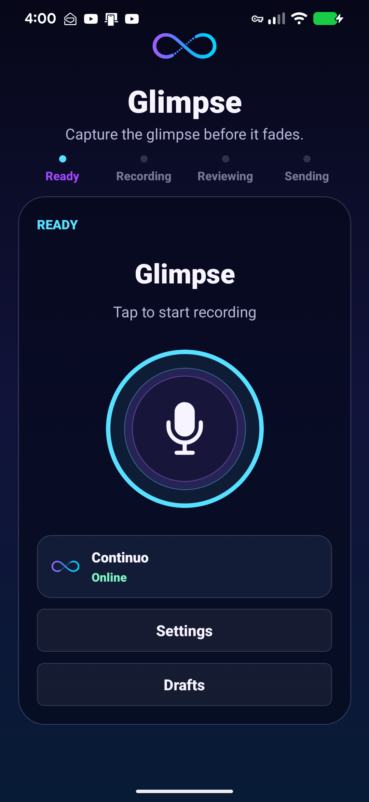
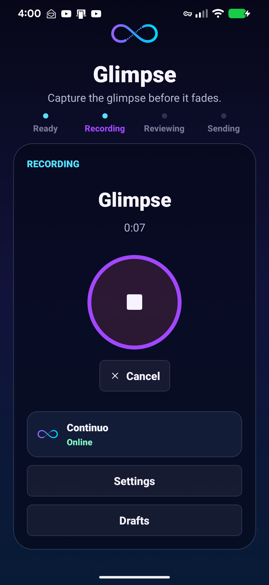
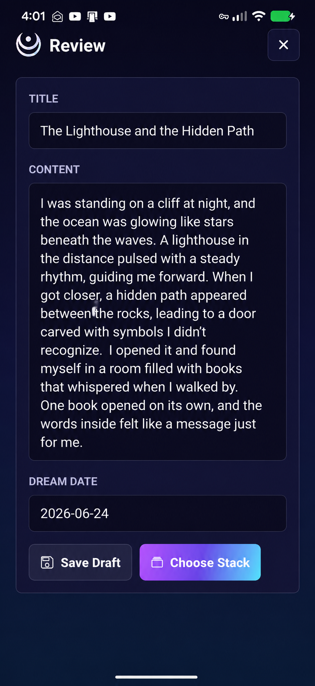
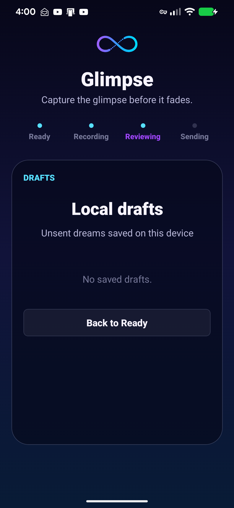
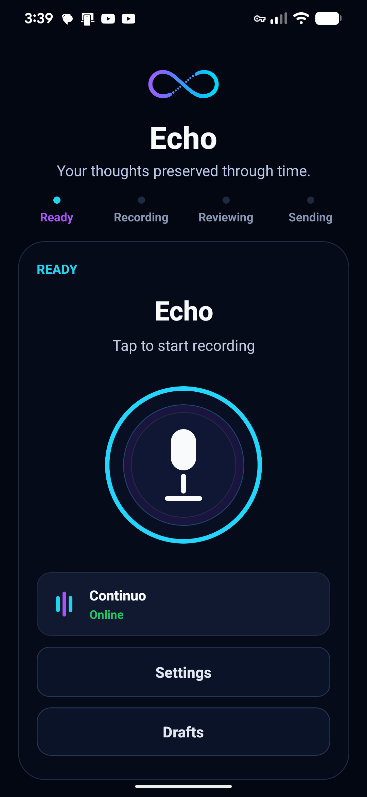
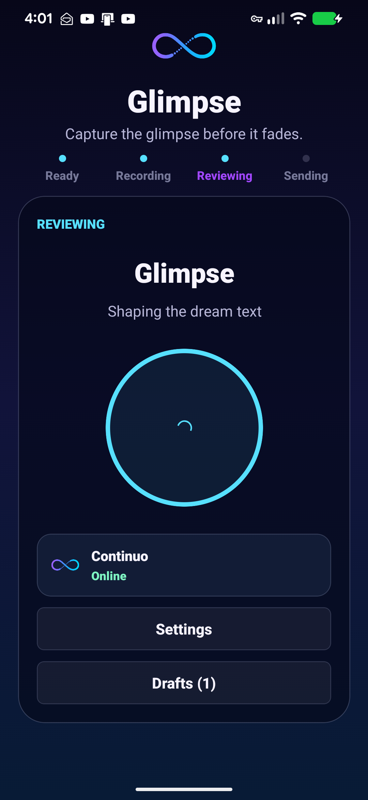

Glimpse is the subconscious capture companion to Continuo. It preserves dreams,
symbols, emotions, and fragments of meaning before they disappear into waking life.
Glimpse is a dream capture system designed for speed.
Most dreams disappear within minutes of waking.
Glimpse removes friction from the process: wake up, record, review, preserve.
Every dream becomes a structured entry inside the larger Continuo ecosystem.
Voice CaptureDream ReviewLocal DraftsSyncs To Continuo
Why It Exists
Dreams often contain emotional patterns, symbols, and narratives that never appear
during conscious reflection.
Most are forgotten before they can be examined.
Glimpse exists to preserve those fragments long enough to understand them.
Core Workflow
1

Capture
Wake up. Speak immediately. Preserve the dream before it fades.
2

Transcribe
Voice becomes structured dream text. Titles, dates, and content are generated automatically.
3

Review
Clarify details while the memory is fresh. Edit, refine, and preserve important context.
4

Connect To Continuo
Dream entries become part of the subconscious memory stream. Patterns emerge over time.
Conscious Capture
Echo
Thoughts
Observations
Ideas
Reflections
Experiences

Continuo
Together they preserve both sides of the human experience.
Subconscious Capture
Glimpse
Dreams
Symbols
Archetypes
Patterns
Emotional Themes
Subconscious Reflection
Beyond Dream Journaling
A single dream may be interesting. Fifty dreams may reveal a pattern.
Glimpse was created to support Subconscious Reflection inside Continuo.
Recurring symbols.
Recurring locations.
Recurring emotions.
Recurring narratives.
The goal is not simply to store dreams. The goal is to understand them.
◯☾▯◉⌁△♒
Glimpse In Action
Ready Wake up. Tap to record.Recording Capture the dream in real time.

Reviewing Shape the dream text.Drafts Dreams stay saved locally.Review Choose the stack and preserve context.
Connection To Continuo
☁
Dream
Glimpse
▤
Dream Entry
Continuo
◌
Subconscious Reflection
Glimpse is not the destination. Continuo is. Glimpse preserves the dream.
Continuo discovers the pattern.
Most dreams are forgotten.
Some are remembered. A few change the way we see ourselves.